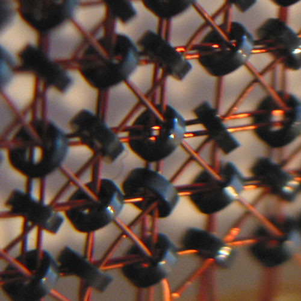
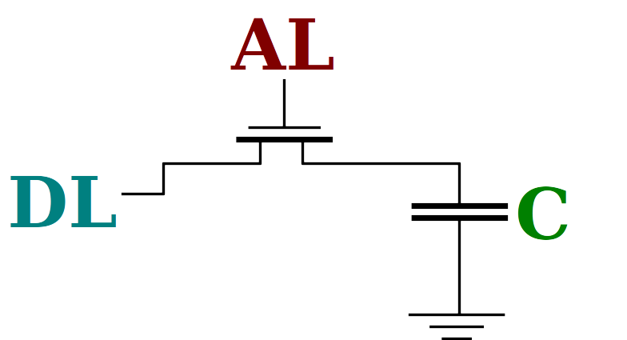
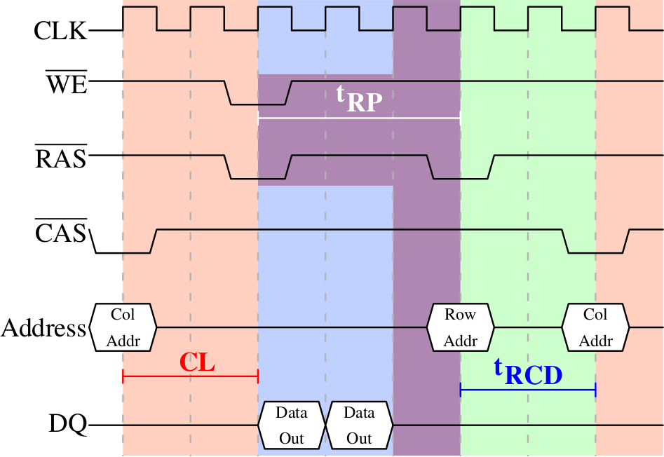
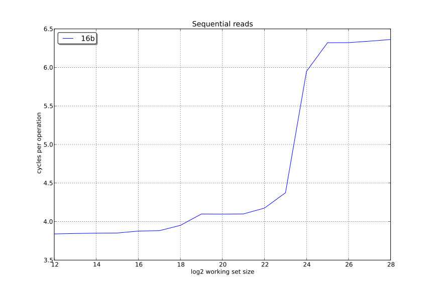
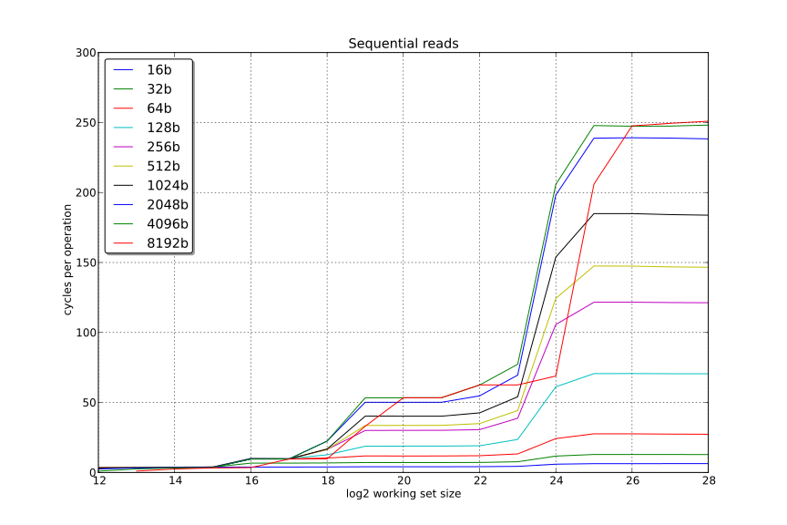
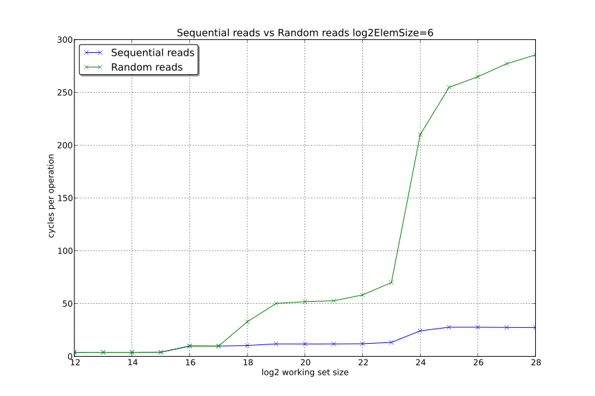
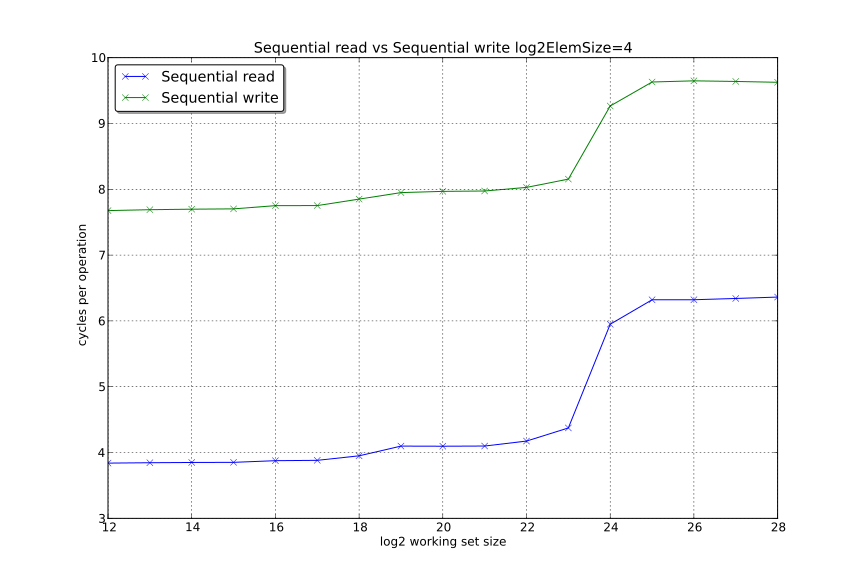
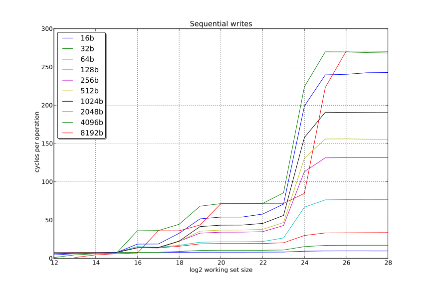
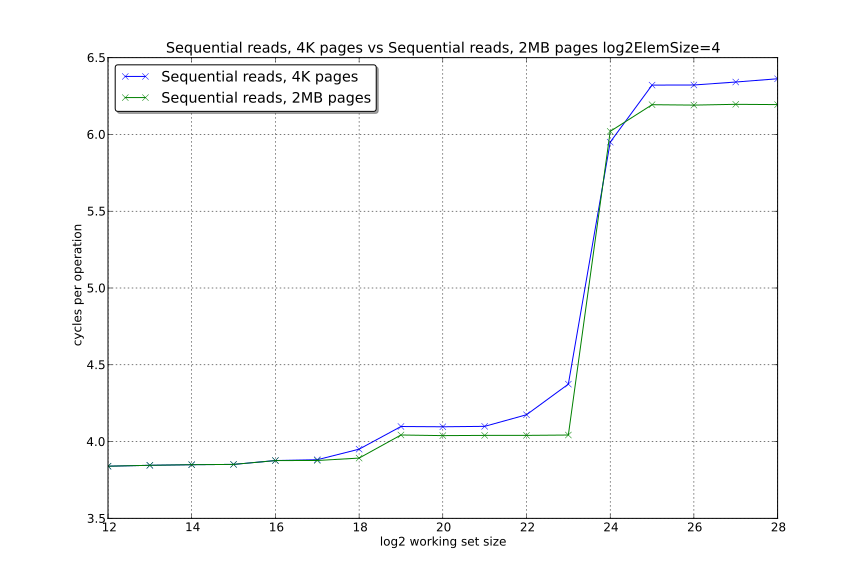
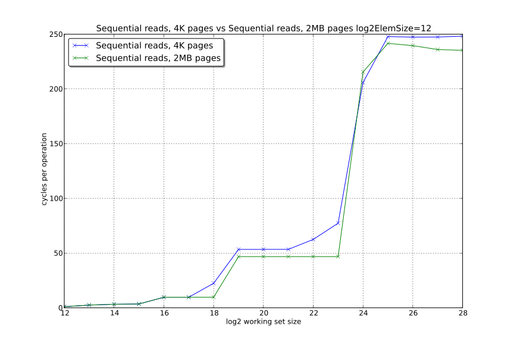

Memory & Caches
How they work, and how they affect performance
Matt Godbolt @mattgodbolt
Outline
- Physical memory
- Caches
- Measuring
- Virtual memory
- Multiprocessing
Types of RAM
- Static RAM
- Dynamic RAM
- Non-volatile
1 Bit of Static RAM
1 Bit of Static RAM
Static RAM
- 6 transistors per bit
- Requires constant power
- Logic-level
- Repeating layout
- <1ns access times
- Why not make all RAM this way?
COST!
1 Bit of Dynamic RAM
Dynamic RAM
- One transistor per bit
- Leaks charge
- Requires refresh
- It's analogue!
- Needs ADC
- Takes time to charge/dischard
- External chips

Reading from DRAM (short version)
- Precharge bit-lines (
tRP~18 cycles) - Select row (
tRCD~18 cycles) - Sense & latch row data (~8192 bits)
- Feedback starts recharging cells
- Select column (
CAS~16 cycles)- Data is now available
- Need to wait for next precharge (tRAS ~36 memory cycles)
DRAM timings — read

Image source: Ulrich Drepper
DRAM timings — precharge

Image source: Ulrich Drepper
Memory Controller
- Embedded in CPU
- Opens/closes rows
- Reorders load/stores
- Schedules refreshes (~64ms)
- Handles DMA
Image source: Ulrich Drepper
Getting DRAM data out
- DDR4 3200 bus runs at ~1600MHz
- 64-bits per clock, 2x pumped
- 1600MHz x 2 x 64 bit
= 25,600MB/sec
Access times
- First word: 10.67ns
- Fourth word: 11.67ns
- Eighth word: 13.00ns
Access times can dominate over data rates
Caching
- Static RAM is small and expensive
- Dynamic RAM is cheap, large & slow
- Use SRAM as cache for DRAM!
- But how to do this in hardware?
- Break into "entries" that can be cached
Cache entries
- Organise data in "lines" of 64 bytes
- Bottom 6 address bits index into this
- Use some address bits to choose a "set"
- e.g. 6 bits for L1 cache; 11 for L2; 13+ for L3
- Remaining bits are a "tag"
Cache entries
636 + S + 1 |
6 + S6 |
50 |
| Tag | Set | Offset |
64 - 6 - S bits |
S bits |
6 bits |
Cache lookup
- The
Sbits choose a set - Each set has a number of "ways" (e.g. 8)
- Each way has "tag" and 64-bytes of cache data
- Search all the ways for a match with "tag"
Cache lookup
// Cache config parameters:
constexpr auto NumLineBits = 6u; // 6 bits on Intel CPUs, 64-byte lines
constexpr auto NumSetBits = 6u; // 6 bits on Intel L1 caches
constexpr auto NumWays = 8u; // 8 ways on Intel L1 cache
constexpr auto LineSize = 1u << NumLineBits;
struct Line { char data[LineSize]; };
struct Way { uint64_t tag; Line line; };
struct Set { Way ways[NumWays]; };
constexpr auto NumSets = 1u << NumSetBits;
struct Cache { Set sets[NumSets]; };
Cache lookup
int Cache::readByte(uint64_t addr) const {
constexpr auto LineMask = (1u << NumLineBits) - 1u;
auto lineOffset = addr & LineMask;
constexpr auto SetMask = (1u << NumSetBits) - 1u;
const Set &set = sets[(addr >> NumLineBits) & SetMask];
constexpr auto TagMask = (1u << (NumLineBits + NumSetBits)) - 1u;
auto tag = addr & TagMask;
for (const auto &way : set.ways)
if (way.tag == tag) return way.line.data[lineOffset];
return -1;
}
We just implemented a bad hash map!
- Bad hash function
- Fixed size bucket chain
- Why is it this way?
Caching
| Tag | Set | Offset |
Timings
Approximate for Sandy Bridge
| Level | Size | Access time |
|---|---|---|
| L1 | 32KB | ~3 cycles |
| L2 | 256KB | ~8 cycles |
| L3 | 10-20MB | ~30-40 cycles |
| (RAM) | ~250 cycles |
Changes soon
Newer Intel chips to have bigger L2s Skylake-X exclusive L3,Real-world measurements
- Measured on Westmere X5690
32KB / 256KB / 12MB - Timed pointer chasing
- Vary:
- Element size
- Total # elements
- Order of links
Real-world measurements
struct Element {
Element *next;
uint8_t padding[ElementSize];
};
Element elements[NumElements];
Real-world measurements
Sequential
Result: Sequential reads
Discussion
- Why so fast?
- Automatic prefetching
- Cache spots patterns in misses
Result: Sequential reads
Discussion
- 8192 byte stride?
- L3 cache is 12-way 12288-set associative
- 1024, 2048, 4096 divide into 12288
- 8192 doesn't
Sequential vs Random Reads
Discussion
- Why worse than 250 cycles?
- Prefetching can hurt
- Linear scan 5x faster
prefetchis available- Hard to get right
- Overrides Critical Word Load
Writes vs Reads
Writes
Virtual memory
- How do virtual address fit into this?
- Page tables require 4 reads to walk:
TLBs
- Translation cache, two-level 4-way (Sandy Bridge)
- L1: 64 4KB page / 32 2MB page
- L2: 512 4KB page
Virtual Memory & Caching
- L1 is fast & small
- Physically tagged, virtually indexed
- 64 sets: bits 11:6 of address
- DTLB read in parallel with cache fetch

- L2 and above
- Caches physical address
Example with Huge Pages
More on Huge Pages
~15 cycle improvement